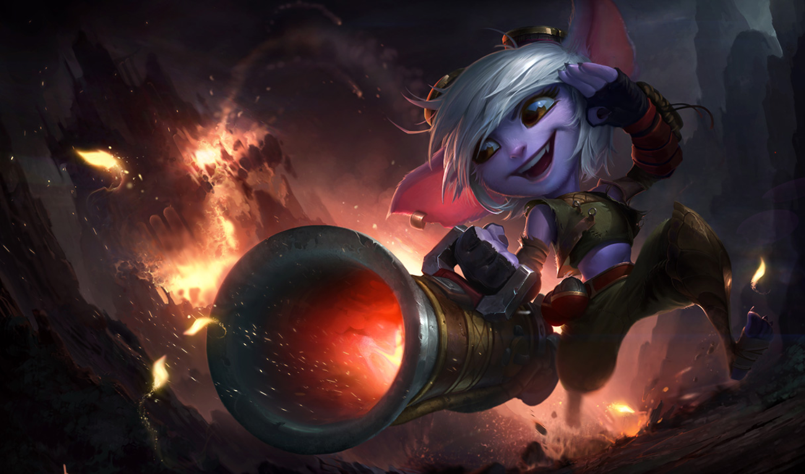

Está preparado para descobrir a história lendária de seu campeão
e arrebentar no seu jogo? Esperamos que sim!
Antes de começarmos, diga-nos: aonde gostaria de jogar?
Você escolheu: " "
Agora escolha seu campeão e veja algumas informações sobre ele
Illaoi, A Sacerdotisa Craquiém

O poderoso porte físico de Illaoi só perde para sua fé indomável. Como profetisa do Grande Cráquem, ela usa um gigantesco totem dourado para arrancar o espírito de seus inimigos de seus corpos e estilhaçar a sua percepção da realidade. Todos os que desafiam a ''Verdadeira Portadora de Nagacáburos'' logo descobrem que Illaoi nunca vai à luta sozinha — o deus da Ilha das Serpentes luta a seu lado.
Nunu E Willump, O Garoto e Seu Yeti

Era uma vez um garoto que queria provar a todos que poderia ser um herói indo matar uma fera horripilante... mas que no fim descobriu que esse monstro era um solitário yeti mágico que só queria um amigo. Unidos por um antigo poder e compartilhando um amor por bolas de neve, Nunu e Willump agora vagavam ferozmente através de toda Freljord, dando um sopro de vida em aventuras imaginárias. Eles tinham esperança de que em algum lugar encontrariam a mãe de Nunu. Se conseguirem salvá-la, talvez eles realmente se tornassem heróis, afinal...
Pantheon, A Lança Indestrútivel

Antes um relutante portador do Aspecto da Guerra, Atreus, recusando-se a sucumbir a um golpe que arrancou estrelas do céu, conseguiu sobreviver quando o poder celestial dentro dele foi morto. Com o tempo, ele aprendeu a usar o poder de sua própria mortalidade e da persistente resiliência que veio junto a ela. Hoje Atreus se opõe a tudo o que é divino com o renascimento de um novo Pantheon, e sua inabalável determinação é o que alimenta as armas do antigo Aspecto no campo de batalha.
Trsitana, O Olho do Crepúsculo
Apesar de muitos outros yordles focarem sua energia em descobertas, invenções ou simplesmente travessuras, Tristana sempre se inspirou nas aventuras de grandes guerreiros. Ela ouviu muito sobre Runeterra, suas facções e suas guerras, e acreditava que sua raça também poderia se tornar digna de lendas. Pisando no mundo pela primeira vez, ela pegou seu canhão de confiança, Boomer, e agora salta para a batalha com coragem e otimismo inabaláveis.
Shen, O Olho do Crepúsculo

Para os guerreiros ionianos sigilosos conhecidos como Kinkou, Shen, o Olho do Crepúsculo, é um líder. Ele busca permanecer livre da confusão das emoções, preconceito ou ego, caminhando pelo caminho nunca visto do julgamento imparcial entre o reino dos espíritos e o mundo físico. Incumbido de impor harmonia entre os dois, Shen empunha lâminas de aço e energia arcana contra qualquer um que ameaçar o equilíbrio.